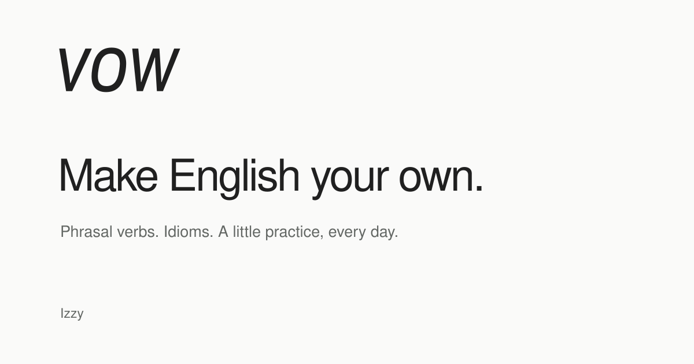

Make English your own.
Paper · #FAFAF9
Graphite · #202020
Secondary · #636764
Focus · #3155D9
過去を区切って、新しく始める。One expression. Something of your own to say.
句動詞とイディオムを、毎日の会話へ。意味を思い出して、確かめる。次は、自分の言葉で。
